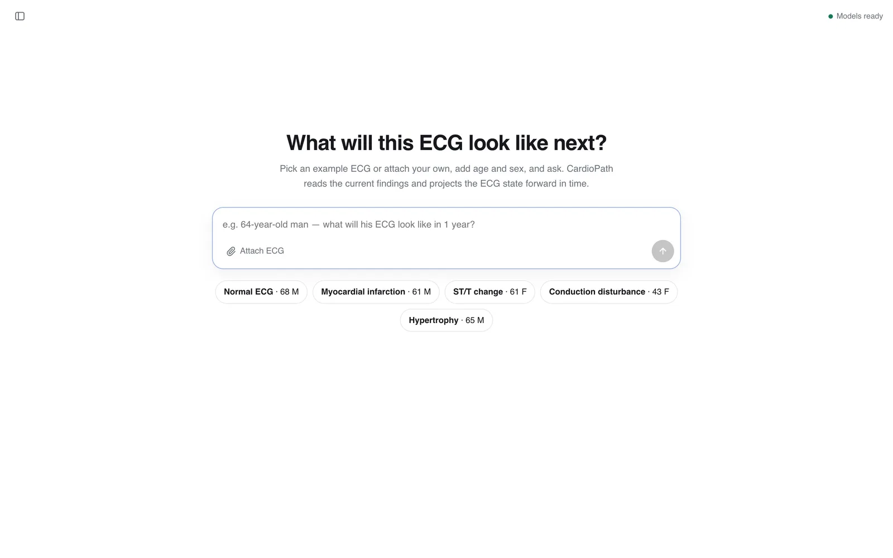
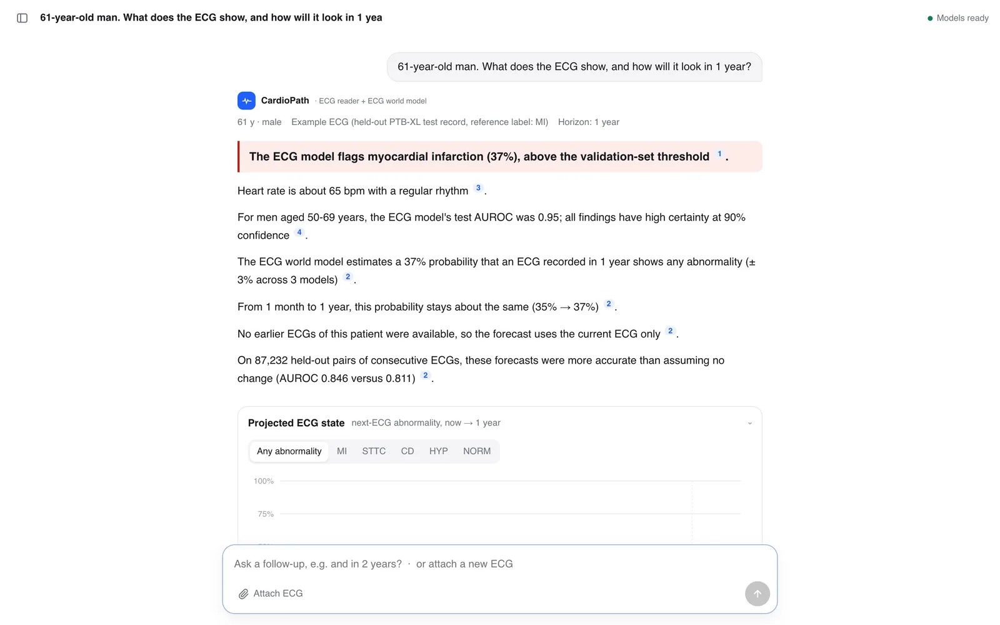
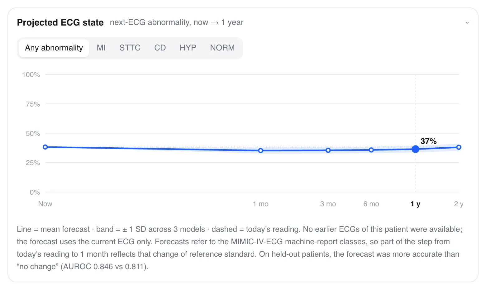
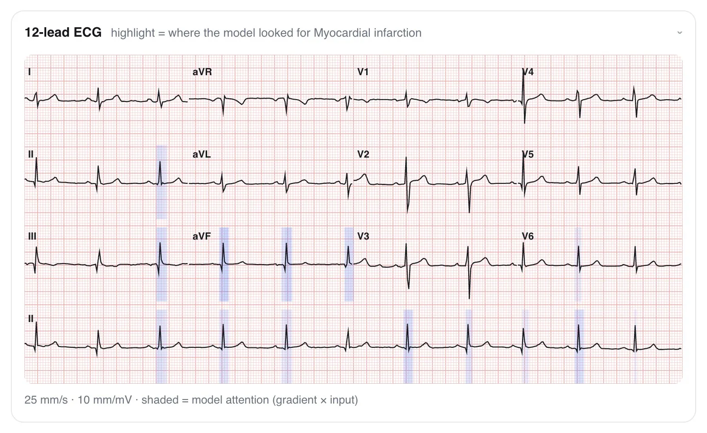
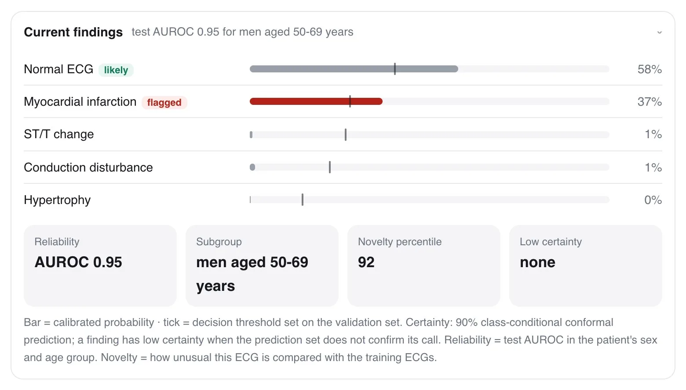
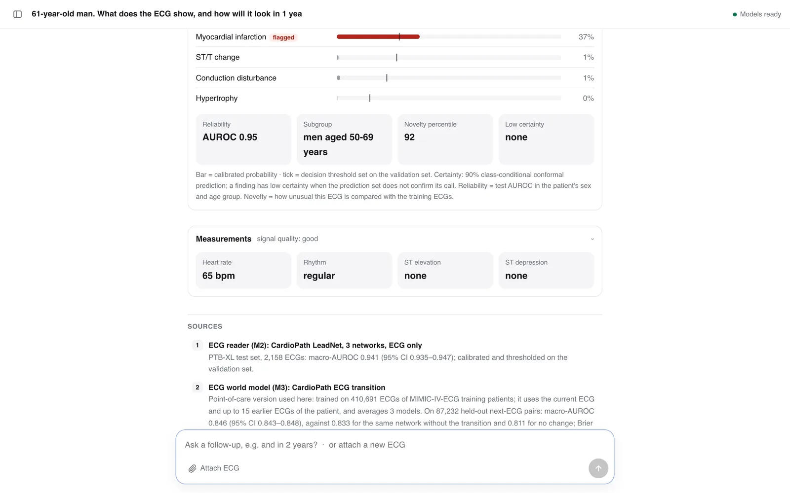
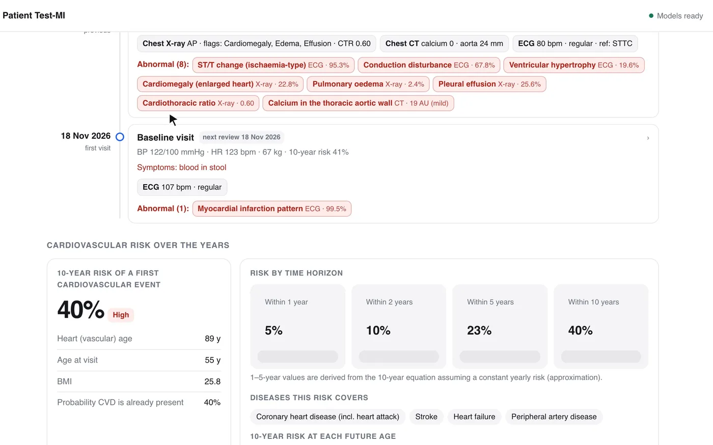
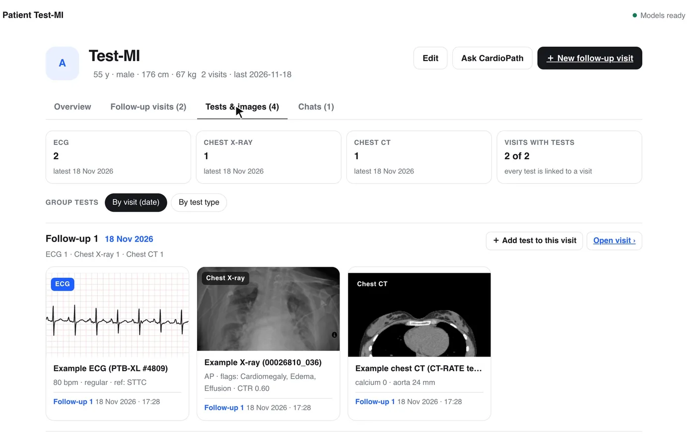

Home / World Models / CardioPath
CardioPath: an ECG world model that forecasts the next ECG
CardioPath is a medical AI system I designed and built. It reads a 12-lead ECG, says what it shows now, and uses a world model to forecast how the patient’s next ECG is likely to look, from 1 month to 2 years ahead. Every statement in its answer links to the model or rule that produced it.
Please note: the demo runs on my own computer and is shared through a temporary link. It is only available while that computer is on, so it may be offline, slow, or the address may change. It is not guaranteed to be working at all times. If the link does not open, email me and I will share a working one.
See it working
On-screen text
CardioPath: a cardiovascular world model, developed by Md. Mehedi Hassan under the supervision of Professor Shariful Islam at Texas Tech University.
CardioPath reads a 12-lead ECG and reports the current findings. Each statement is linked to its source.
The ECG world model projects every finding forward in time, from one month to two years, with uncertainty across three models.
Attention maps show which parts of the tracing drove each finding.
For each patient, findings from the ECG, chest X-ray and CT are combined into one current diagnosis.
The record tracks 10-year cardiovascular risk, estimates the effect of treatment, and forecasts each ECG condition up to two years ahead.
Follow-up visits are kept on a timeline, with the measurements, tests and findings from each visit.
All tests and images are organised by visit.
On the chest X-ray, the model outlines the heart and lungs, measures the cardiothoracic ratio, and highlights the region behind each finding.
On chest CT, organ outlines, calcium scores and aortic measurements are shown in the axial, coronal and sagittal planes.
What it does
- Ask a question about an ECG. Attach an ECG or pick an example, add age and sex, and ask, for example, “what will his ECG look like in 1 year?”
- Read the current ECG. An ensemble of three networks scores five findings: normal, myocardial infarction, ST/T change, conduction disturbance and hypertrophy. Rule-based measurements add heart rate, rhythm and ST deviation.
- Forecast the next ECG. The ECG world model maps the ECG into a latent state and learns how that state changes between a patient’s consecutive ECGs. It projects the chance of each finding at 1, 3 and 6 months, 1 year and 2 years. If earlier ECGs exist, it uses up to 15 of them.
- Check how reliable the answer is. Each finding gets a 90% conformal certainty check, the test accuracy for the patient’s age and sex group, and a novelty score that warns when an ECG is unlike anything in the training data.
- Read chest X-ray and CT. In a patient record, a chest X-ray model outlines the heart and lungs and measures the cardiothoracic ratio, and a CT model outlines organs and scores calcium. All findings are combined into one diagnosis, tracked across follow-up visits.
- Explain where it looked. Shading on the 12-lead tracing shows which parts of the signal drove the finding (gradient × input attention).
Screenshots











How well it works
| Component | Evaluation | Result |
|---|---|---|
| ECG reader (CardioPath LeadNet, 3 networks) | PTB-XL test set, 2,158 ECGs | macro-AUROC 0.941 (95% CI 0.935–0.947) |
| ECG world model (point-of-care version) | 87,232 held-out pairs of consecutive ECGs, MIMIC-IV-ECG | macro-AUROC 0.846 (95% CI 0.843–0.848) |
| Same network without the learned transition | same pairs | macro-AUROC 0.833 |
| “No change” baseline | same pairs | macro-AUROC 0.811 |
| Calibration (Brier score, lower is better) | same pairs | 0.117 vs 0.162 for “no change” |
| Full world model, adding machine measurements | same pairs | macro-AUROC 0.865 |
The world model was trained on 410,691 ECGs from MIMIC-IV-ECG training patients and averages three models. Forecasts refer to the MIMIC-IV-ECG machine-report classes. Thresholds, calibration and reliability checks were all fitted on validation data.
The maths in brief is on the World Models page.
Built with
- 12-lead ECG deep learning (ensemble of 3 networks)
- Latent transition model (world model)
- Conformal prediction
- Mahalanobis novelty detection
- Gradient × input attention
- PTB-XL
- MIMIC-IV-ECG
Interested in a collaboration, the method, or a demo when the live link is offline? Get in touch.
Email me about CardioPath How world models work